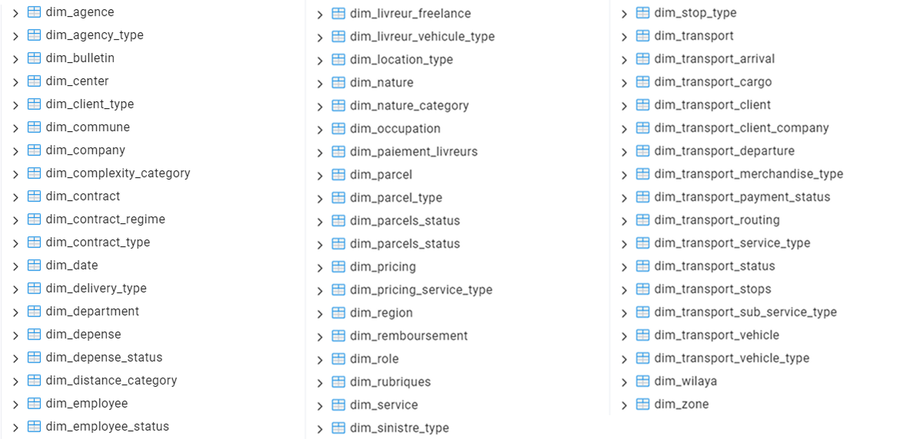
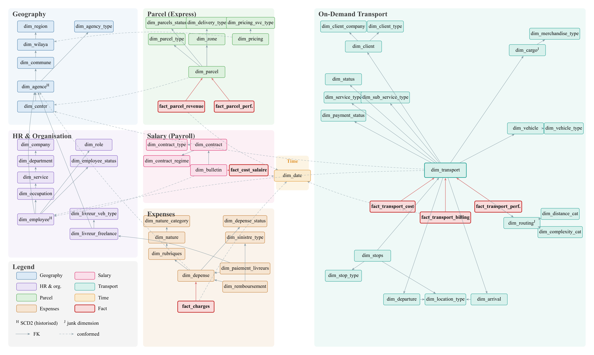
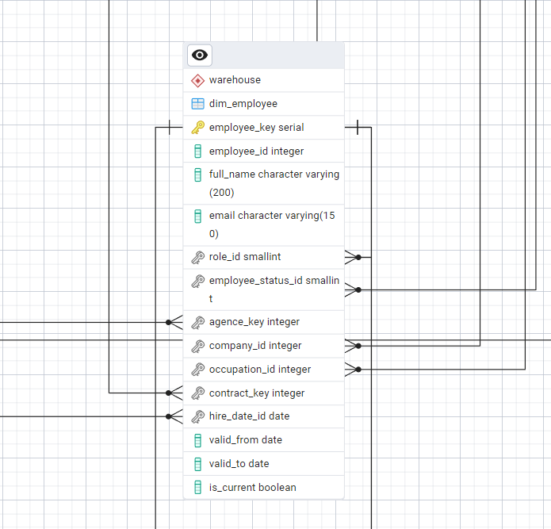

Data warehouse¶
The data warehouse is the analytical core of LOGIQ. It is the single consolidated base that every dashboard, alert and AI-assistant answer reads from.
Design approach¶
The warehouse uses dimensional modelling following the Kimball lifecycle. The model is organised around the business questions to answer, not around the source systems. For each business process (parcel delivery, transport request, salary run, expense record), four steps are applied in order:
- Select the business process.
- Declare the grain — the exact meaning of one fact row, fixed before any column.
- Choose the dimensions — the descriptive context: who, what, where, when.
- Identify the facts — the numeric measures recorded at that grain.
Source scoping¶
Of the ten operational applications, five feed the warehouse. Each source is sorted into facts (measurable events) and dimensions (descriptive context).
| Source (generic name) | Data it provides | Feeds |
|---|---|---|
| Core logistics application | Geography (wilayas, communes), delivery-centre network, pricing grid, parcel status-event history | Geography, pricing and parcel dimensions; the 2 parcel facts |
| HR system | Companies, agencies, organisational hierarchy, employees, roles | Organisational and HR dimensions (incl. SCD2 agencies and employees) |
| Expense management system | Operating expenses, freelance-driver payments, parcel reimbursements | Expense dimensions; the charges fact |
| Payroll system | Payslips and employment contracts | Contract and payslip dimensions; the salary-cost fact |
| Dedicated transport module | B2B requests and their stops | Transport dimensions; the 3 transport facts |
Two points drive the rest of the design. First, the parcel status-event history is by far the largest input, and the only one at a fine, repeated grain (many events per parcel). Second, the HR system is shared by both axes — exactly what conformed dimensions exploit.
Four layers¶
flowchart BT
STG["<b>Staging</b><br/>faithful, untransformed copy of each source extract<br/>one table per source endpoint"]
DIM["<b>Dimensions</b><br/>conformed context: who, what, where, when<br/>snowflaked hierarchies, SCD2 where needed"]
FCT["<b>Facts</b><br/>measurable business events<br/>7 tables, each at a declared grain"]
AGG["<b>Aggregates</b><br/>pre-computed summaries by period, axis, geography, organisation<br/>what the dashboards read"]
STG --> DIM --> FCT --> AGGEach layer refines the one below it. Most importantly, the dashboards read the aggregate layer, not the raw facts. That is what keeps a view responsive at national scale.
| Layer | Realised in PostgreSQL as | Objects |
|---|---|---|
| Staging | One raw landing table per source endpoint, no business logic | 18 |
| Dimensions | Normalised (snowflaked) tables, SCD Type 2 where attributes change | 55 |
| Facts | Fact tables keyed to their dimensions, holding the measures | 7 |
| Aggregates | Materialised views, refreshed each run — the only source of the analytics API | 5 |
The schema is created by ordered, idempotent SQL scripts, one group per layer. The whole warehouse can therefore be rebuilt deterministically from scratch.
Table inventory¶
| Source | # | Staged entities |
|---|---|---|
| Core logistics application | 5 | wilayas, communes, delivery centres, pricing grid, parcel status history |
| HR system | 4 | companies, agencies, occupations, users |
| Expense management system | 6 | expense natures, expense headings, expenses, driver payments, reimbursements, transfers |
| Payroll system | 1 | payslips |
| Dedicated transport module | 2 | requests, stops |
| Domain | # | Principal dimensions |
|---|---|---|
| Geographic | 6 | region → wilaya → commune → agency (SCD2) → centre; agency type |
| HR & organisational | 9 | company → department → service → occupation; employee (SCD2); freelance driver; role; status |
| Time | 1 | date (calendar spine, 2022–2026) |
| Parcel (express) | 7 | parcel; pricing; status; zone; delivery and parcel type |
| Salary | 4 | contract; payslip; contract type and regime |
| Expenses | 8 | expense; nature hierarchy; reimbursement; driver payment; status; claim type |
| Transport | 20 | transport (central); departure / arrival (role-playing); cargo and routing (junk); vehicle; client; stops; status; service type |

| Fact table | Grain (one row per…) | Principal measures |
|---|---|---|
| Express parcel-delivery perimeter | ||
| Parcel revenue | resolved parcel | Delivery fee; theoretical tariff; tariff gap |
| Parcel performance | resolved parcel | Event count; total transit duration; failed-attempt count |
| Salary cost | payslip (employee × month) | Gross salary; deductions; employer charges |
| Operating charges | validated expense record | Expense amount |
| On-demand transport perimeter | ||
| Transport cost | transport request | Cost build-up (base, distance, handling, insurance, fuel…) and total cost |
| Transport billing | transport request | Amount invoiced; amount paid; gross margin (value and %) |
| Transport performance | transport request | Distances; durations; stop counts; delays; on-time flag; client rating |
Schema: a fact constellation¶
LOGIQ adopts a fact-constellation (galaxy) schema with snowflaked dimensions.
- Constellation: the seven facts share a common set of conformed dimensions instead of forming isolated stars. Figures therefore reconcile: a cost and a revenue for the same agency and month really do refer to the same agency and month. No fact mixes a parcel measure with a transport measure.
- Snowflake: every hierarchy is normalised into one table per level, so each attribute lives in exactly one place. A value stored once cannot disagree with itself.


Modelling techniques¶
| Technique | Where | Why |
|---|---|---|
| Conformed dimensions | Time, geography, organisation, employee — shared by all 7 facts | One agreed definition, so figures reconcile across views and axes |
| Snowflaked hierarchies | Geographic and organisational chains | Each attribute stored once — a single source of truth |
| SCD Type 2 | Agencies and employees | A fact stays attributed to the agency or employee as it was at event time |
| Junk dimensions | Transport cargo and routing flags | Many low-cardinality flags collapsed into one row; narrow facts |
| Role-playing dimensions | Geography as departure vs arrival; calendar as creation / completion / payment date | One physical table reused in several roles |
| Natural vs surrogate keys | Natural keys where codes are stable (wilaya, commune, date); surrogates for SCD2 and composite keys | Stability where it exists, generated keys only where needed |
| Controlled denormalisation | Hire date and company copied onto the employee dimension | Avoid nullable or SCD2-unstable join paths |
| Two financial perimeters | Express facts vs transport facts | Costs and revenues of the two axes never mixed in a fact |
SCD Type 2 in practice¶
Agencies get relocated or reclassified, and employees get reassigned. The warehouse must remember what was true when an event happened. A change therefore does not overwrite the row: it closes the old version and opens a new one, each with its own surrogate key and validity window.
flowchart LR
O["<b>Old version (historical)</b><br/>agence_key = 1042<br/>agency_id = 57<br/>type = Agence<br/>valid_from = 2022-01-01<br/>valid_to = 2024-03-14<br/>is_current = false"]
N["<b>New version (current)</b><br/>agence_key = 2317<br/>agency_id = 57 (same business key)<br/>type = Hub<br/>valid_from = 2024-03-15<br/>valid_to = NULL<br/>is_current = true"]
O -- "agency relocated" --> NA fact references the version that was current at its event date, so history is preserved exactly. All other dimensions are Type 1 (overwrite).

is_current flag.Scale¶
The warehouse is sized for production-scale volumes. The parcel status-event history dominates, at tens of millions of rows. The cost side (payslips, expenses) is smaller, and the transport facts are modest. This scale explains three design choices:
- the aggregate layer lets a dashboard read a small summary instead of scanning the facts;
- the refresh is incremental: only new and changed rows are loaded, never a full reload;
- the analytical store is separate from the operational one, so analytics never disturb the application.
Measured volumes of the test dataset are on Testing & results.